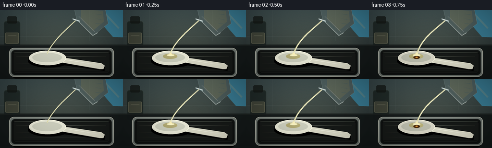
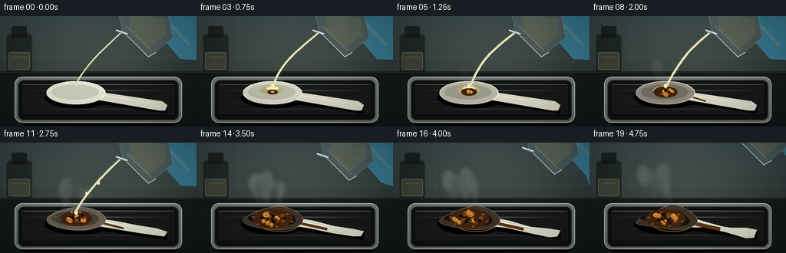
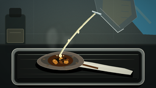
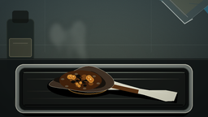

CODING AGENTS AS PIXEL WORLD MODELS
traex/GPT-5.6-Sol · material_0041
点击播放 · 原生 RGB 像素
逐轮保存的候选
回放视频、检查图与代码变化。
每份候选均可单独播放。实际图片检查记录在下方工具轨迹中。
候选 01播放与检查图
点击播放 · 原生 RGB 像素


展开代码变化
--- 上一保存版本
+++ 本次保存版本
@@ -0,0 +1,243 @@
+from pathlib import Path
+import math, json
+import numpy as np
+from PIL import Image, ImageDraw, ImageFilter
+import artifact_io
+
+# Procedural, deterministic macro laboratory time-lapse.
+HERE = Path(__file__).resolve().parent
+spec = json.loads((HERE/'task_spec.json').read_text())
+W,H,N = spec['width'], spec['height'],spec['frames']
+S=4
+w,h=W*S,H*S
+rng=np.random.default_rng(1471)
+
+def pts(seq): return [(int(x*S),int(y*S)) for x,y in seq]
+def ellipse(draw, box, **kw): draw.ellipse(tuple(int(v*S) for v in box), **kw)
+def line(draw, xy, **kw): draw.line(pts(xy), **kw)
+def poly(draw, xy, **kw): draw.polygon(pts(xy), **kw)
+def rr(draw, box, rad, **kw): draw.rounded_rectangle(tuple(int(v*S) for v in box), radius=int(rad*S), **kw)
+
+def background(k):
+ # Cool laboratory wall, warm focused bench light.
+ Y,X=np.mgrid[0:h,0:w]
+ top=np.array([49,66,71.],float); bottom=np.array([18,24,25.],float)
+ mix=(Y/h)[...,None]
+ arr=top*(1-mix)+bottom*mix
+ glow=np.exp(-(((X-w*.48)/(w*.58))**2+((Y-h*.53)/(h*.72))**2))[...,None]*np.array([28,25,16])[None,None,:]
+ arr += glow
+ # Fine sensor grain and minute time-lapse exposure variation.
+ grain=np.random.default_rng(900+k).normal(0,1.15,(h,w,1))
+ arr=np.clip(arr+grain+(0.7*math.sin(k*.71)),0,255).astype('uint8')
+ im=Image.fromarray(arr,'RGB')
+ d=ImageDraw.Draw(im,'RGBA')
+ # out-of-focus tiled backsplash
+ line(d,[(0,55),(256,55)],fill=(113,127,124,34),width=1*S)
+ line(d,[(55,0),(55,64)],fill=(122,135,133,20),width=1*S)
+ line(d,[(186,0),(186,64)],fill=(122,135,133,18),width=1*S)
+ # shadowy reagent bottle at left background
+ rr(d,(8,23,42,87),5,fill=(16,24,21,160),outline=(117,128,105,40),width=S)
+ rr(d,(15,13,35,28),3,fill=(18,22,19,190))
+ rr(d,(11,47,39,70),2,fill=(181,166,119,55),outline=(224,216,173,45),width=S)
+ line(d,[(16,53),(34,53)],fill=(220,212,180,45),width=S)
+ # bench horizon
+ poly(d,[(0,72),(256,72),(256,144),(0,144)],fill=(18,23,23,235))
+ line(d,[(0,73),(256,73)],fill=(137,143,129,45),width=S)
+ # reflected pools of lab light
+ for cx,alpha in [(72,18),(176,13)]:
+ ellipse(d,(cx-55,101,cx+55,151),fill=(154,149,117,alpha))
+ return im
+
+def draw_tray(im):
+ d=ImageDraw.Draw(im,'RGBA')
+ # stainless tray drop shadow then rim and black chemical-resistant liner
+ rr(d,(24,85,234,143),10,fill=(0,0,0,125))
+ rr(d,(19,79,237,139),10,fill=(111,118,113,255),outline=(205,207,192,180),width=S)
+ rr(d,(23,83,233,136),8,fill=(15,18,17,255),outline=(62,69,64,255),width=S)
+ rr(d,(27,87,229,132),6,fill=(22,25,23,255),outline=(8,9,9,255),width=S)
+ # brushed linear highlights
+ line(d,[(29,89),(227,89)],fill=(111,120,107,42),width=S)
+ line(d,[(30,129),(225,129)],fill=(0,0,0,120),width=S)
+ for y in (97,112,121):
+ line(d,[(33,y),(220,y)],fill=(136,142,126,8),width=S)
+
+def draw_spoon(im,k):
+ d=ImageDraw.Draw(im,'RGBA')
+ p=k/19
+ react=max(0,min(1,(k-2)/12))
+ severe=max(0,min(1,(k-8)/11))
+ # cast shadow
+ ellipse(d,(58,92,145,120),fill=(0,0,0,115))
+ line(d,[(126,108),(218,121)],fill=(0,0,0,125),width=12*S)
+ # spilled acid / carbonaceous puddle progressively expands beneath impact
+ if k>=4:
+ pw=20+28*react; ph=6+9*react
+ ellipse(d,(103-pw/2,104-ph/2,103+pw/2,104+ph/2),fill=(42,30,17,int(95+90*react)))
+ ellipse(d,(95-12*react,99,111+22*react,109+7*react),outline=(151,108,44,80),width=S)
+ # handle deforms only late, remaining recognizable as spoon
+ base=[(124,98),(211,111),(218,116),(215,123),(207,123),(121,108)]
+ if severe>0:
+ base=[]
+ for i,(x,y) in enumerate([(124,98),(151,103),(179,108),(204,111),(218,116),(214,123),(204,121),(177,116),(149,112),(121,108)]):
+ y += severe*(2.8*math.sin(i*1.6+k*.25)+i*.14)
+ x -= severe*max(0,i-5)*.5
+ base.append((x,y))
+ # handle fill ages from clean ivory to scorched at junction
+ poly(d,base,fill=(219,218,199,255),outline=(244,244,225,220))
+ line(d,[(134,103),(207,115)],fill=(255,255,239,100),width=S)
+ # brown blister line creeps down neck
+ if react>0.35:
+ length=20+24*(react-.35)/.65
+ line(d,[(126,103),(126+length,108+length*.11)],fill=(91,52,21,int(100+100*react)),width=max(S,int((2+3*severe)*S)))
+ # bowl outline warps/collapses as reaction develops
+ bowl=[]
+ for i in range(40):
+ a=2*math.pi*i/40
+ x=99+38*math.cos(a)
+ y=100+15*math.sin(a)
+ if severe:
+ x += severe*(4*math.sin(3*a+1.2)+6*(1-math.cos(a))*.25)
+ y += severe*(4*math.sin(2*a+.7)-2*math.cos(a))
+ bowl.append((x,y))
+ clean=np.array([229,229,211.]); char=np.array([44,28,17.]); col=clean*(1-react*.90)+char*(react*.90)
+ poly(d,bowl,fill=tuple(col.astype(int))+(255,),outline=(247,244,220,220),)
+ # inner concavity gives spoon shape
+ inner=[]
+ for i in range(36):
+ a=2*math.pi*i/36
+ x=98+31*math.cos(a)+severe*3*math.sin(3*a)
+ y=99+10*math.sin(a)+severe*2.5*math.sin(2*a+.3)
+ inner.append((x,y))
+ inner0=np.array([202,204,187.]); inner1=np.array([23,18,13.]); ci=inner0*(1-react)+inner1*react
+ poly(d,inner,fill=tuple(ci.astype(int))+(255,))
+ # clean rim remains early; later irregular charred crust
+ if react<.65:
+ line(d,bowl+[bowl[0]],fill=(251,249,229,int(200*(1-react/.65))),width=S)
+ # wet acid specular patch
+ if 1<=k<=13:
+ wet=1-abs(k-6)/10
+ ellipse(d,(83,91,113,102),fill=(189,181,124,int(35+60*wet)))
+ ellipse(d,(91,92,107,96),fill=(255,250,202,int(80+80*wet)))
+ # expanding brown / black reaction zones and bubbles
+ if k>=3:
+ r=5+21*react
+ ellipse(d,(99-r,99-r*.48,99+r,99+r*.48),fill=(67,34,12,int(80+130*react)))
+ # fibrous carbonized ridges
+ n=5+int(12*react)
+ for j in range(n):
+ a=(j*2.399 + .25*k)
+ rad=(4+(j%5)*3)*react
+ x=99+math.cos(a)*rad; y=99+math.sin(a)*rad*.42
+ rradius=1.0+(j%3)*.55+react
+ color=(15,12,9,int(130+100*react)) if j%2 else (118,66,22,int(120+80*react))
+ ellipse(d,(x-rradius,y-rradius*.65,x+rradius,y+rradius*.65),fill=color)
+ # bright foamy bubbles, changing positions over time
+ for j in range(8):
+ a=j*2.19+k*.41
+ br=(1.0+(j%3)*.55)*(0.6+react)
+ x=99+math.cos(a)*(5+16*((j*37)%10)/10)*react
+ y=99+math.sin(a)*(3+6*((j*17)%9)/9)*react
+ ellipse(d,(x-br,y-br,x+br,y+br),fill=(191,112,35,170),outline=(244,181,67,120),width=max(1,S//2))
+ ellipse(d,(x-br*.3,y-br*.5,x+br*.1,y-br*.1),fill=(255,222,134,150))
+ # late buckled rim exposing white patches and ashy flakes
+ if severe>.15:
+ for j in range(6):
+ a=j*math.pi/3+0.3
+ x=99+math.cos(a)*(30-7*severe); y=100+math.sin(a)*(11-2*severe)
+ ellipse(d,(x-2,y-1,x+2,y+1),fill=(101,83,60,180))
+
+def draw_pourer(im,k):
+ d=ImageDraw.Draw(im,'RGBA')
+ # Glass measuring beaker held at a diagonal in upper-right. It recedes after pouring.
+ retreat=max(0,(k-13)/6)
+ dx=retreat*34; dy=-retreat*24
+ vessel=Image.new('RGBA',(w,h),(0,0,0,0)); vd=ImageDraw.Draw(vessel,'RGBA')
+ # nitrile glove behind glass
+ poly(vd,[(202+dx,0+dy),(256,0),(256,57),(235+dx,56+dy),(216+dx,34+dy)],fill=(56,127,153,235))
+ line(vd,[(221+dx,10+dy),(247+dx,38+dy)],fill=(111,190,208,130),width=4*S)
+ # tilted vessel silhouette / body
+ body=[(151+dx,-18+dy),(218+dx,-8+dy),(225+dx,28+dy),(194+dx,53+dy),(160+dx,21+dy)]
+ poly(vd,body,fill=(173,206,207,38),outline=(220,239,236,170))
+ # liquid volume behind glass, colorless with warm refraction
+ poly(vd,[(169+dx,-3+dy),(214+dx,2+dy),(216+dx,24+dy),(193+dx,43+dy),(168+dx,18+dy)],fill=(210,205,146,55))
+ line(vd,[(160+dx,20+dy),(193+dx,53+dy),(203+dx,47+dy)],fill=(238,248,242,190),width=S)
+ line(vd,[(164+dx,13+dy),(197+dx,45+dy)],fill=(255,255,255,80),width=S)
+ # beaker lip and pouring spout
+ line(vd,[(151+dx,18+dy),(166+dx,23+dy)],fill=(238,250,248,230),width=2*S)
+ line(vd,[(152+dx,20+dy),(166+dx,25+dy)],fill=(105,141,143,170),width=S)
+ # graduations
+ for j in range(3):
+ line(vd,[(199+dx,8+j*10+dy),(211+dx,9+j*10+dy)],fill=(100,128,128,95),width=S)
+ im.alpha_composite(vessel) if im.mode=='RGBA' else im.paste(vessel,(0,0),vessel)
+ # pour: starts immediately, strong in middle, then tapers and breaks into drops
+ d=ImageDraw.Draw(im,'RGBA')
+ if k<=13:
+ strength=math.sin(math.pi*min(1,(k+1)/15))**.45
+ x0=157+dx; y0=22+dy
+ # curved viscous stream endpoint stays on spoon
+ curve=[]
+ for q in np.linspace(0,1,24):
+ x=x0*(1-q)+99*q - 7*math.sin(math.pi*q)+1.3*math.sin(k*.5+q*5)
+ y=y0*(1-q)+91*q
+ curve.append((x,y))
+ width=max(S,int((1.0+2.25*strength)*S))
+ line(d,curve,fill=(218,214,163,int(145+70*strength)),width=width)
+ line(d,[(x+0.8,y) for x,y in curve],fill=(255,254,224,int(105+80*strength)),width=max(1,width//3))
+ # drops visible near end
+ if k>=10:
+ for j in range(2):
+ q=.38+j*.27
+ x=x0*(1-q)+99*q-7*math.sin(math.pi*q)
+ y=y0*(1-q)+91*q+((k+j)%3)*2
+ ellipse(d,(x-1.6,y-2.7,x+1.6,y+2.7),fill=(240,235,190,190))
+
+def draw_fumes(im,k):
+ if k<4: return
+ react=min(1,(k-3)/10)
+ fade=1-0.25*max(0,(k-15)/4)
+ layer=Image.new('RGBA',(w,h),(0,0,0,0)); d=ImageDraw.Draw(layer,'RGBA')
+ # Several curling semi-transparent vapor plumes. Movement is time-lapse upward drift.
+ for j in range(8):
+ phase=j*1.73+k*.39
+ base_x=88+(j%5)*6
+ rise=(k-3)*2.2 + (j%3)*7
+ cx=base_x+8*math.sin(phase*.7)-.22*rise
+ cy=91-rise
+ rx=(3+j%3*2)*(0.45+react); ry=(8+j%4*2)*(0.5+react)
+ alpha=int((20+18*(j%3))*react*fade)
+ ellipse(d,(cx-rx,cy-ry,cx+rx,cy+ry),fill=(212,218,207,alpha))
+ # wispy paths
+ for j in range(3):
+ path=[]
+ for q in np.linspace(0,1,18):
+ path.append((96+j*5 + math.sin(q*7+j+k*.25)*(2+6*q), 91-q*(30+2*k)))
+ line(d,path,fill=(221,226,215,int(55*react*fade)),width=max(S,int(2*S*(1-react*.25))))
+ layer=layer.filter(ImageFilter.GaussianBlur(3.0*S))
+ im.paste(layer,(0,0),layer)
+
+def make_frame(k):
+ im=background(k).convert('RGBA')
+ draw_tray(im)
+ draw_spoon(im,k)
+ # fumes must pass behind stream but in front of spoon
+ draw_fumes(im,k)
+ draw_pourer(im,k)
+ # impact sparkle / droplets
+ d=ImageDraw.Draw(im,'RGBA')
+ if 1<=k<=12:
+ ellipse(d,(96.5,88.5,101.5,93.5),fill=(255,245,190,130))
+ for j in range(3):
+ ang=j*2.2+k*.7
+ x=99+math.cos(ang)*(4+(k%3)); y=92+math.sin(ang)*2
+ ellipse(d,(x-.7,y-.7,x+.7,y+.7),fill=(241,223,164,140))
+ # subtle cinematic vignette
+ Y,X=np.mgrid[0:h,0:w]
+ edge=np.clip(((X-w/2)/(w*.63))**2+((Y-h/2)/(h*.72))**2,0,1)
+ alpha=(edge*66).astype('uint8')
+ vig=Image.fromarray(np.dstack([np.zeros((h,w,3),dtype='uint8'),alpha]),'RGBA')
+ im=Image.alpha_composite(im,vig)
+ return np.asarray(im.convert('RGB').resize((W,H),Image.Resampling.LANCZOS),dtype=np.uint8)
+
+frames=np.stack([make_frame(k) for k in range(N)])
+artifact_io.save(frames,HERE)
+print('saved',frames.shape,frames.dtype,'range',frames.min(),frames.max())
可观测工具轨迹
实际执行的命令与返回图片。
命令 1exit 0
/bin/bash -lc "cat prompt.txt && printf '\\n---RULES---\\n' && cat GENERATION_RULES.md && printf '\\n---SPEC---\\n' && cat task_spec.json"
命令 2exit 0
/bin/bash -lc "find . -maxdepth 2 -type f -printf '%p %s bytes\\n' | sort && printf '\\nTools:\\n' && command -v ffmpeg && command -v python3 && command -v convert || true"
命令 3exit 0
/bin/bash -lc 'cat artifact_io.py'
命令 4exit 1
/bin/bash -lc "cat > generate.py <<'PY'
from pathlib import Path
import math, json
import numpy as np
from PIL import Image, ImageDraw, ImageFilter
import artifact_io
# Procedural, deterministic macro laboratory time-lapse.
HERE = Path(__file__).resolve().parent
spec = json.loads((HERE/'task_spec.json').read_text())
W,H,N = spec['width'], spec['height'],spec['frames']
S=4
w,h=W*S,H*S
rng=np.random.default_rng(1471)
def pts(seq): return [(int(x*S),int(y*S)) for x,y in seq]
def ellipse(draw, box, **kw): draw.ellipse(tuple(int(v*S) for v in box), **kw)
def line(draw, xy, **kw): draw.line(pts(xy), **kw)
def poly(draw, xy, **kw): draw.polygon(pts(xy), **kw)
def rr(draw, box, rad, **kw): draw.rounded_rectangle(tuple(int(v*S) for v in box), radius=int(rad*S), **kw)
def background(k):
# Cool laboratory wall, warm focused bench light.
Y,X=np.mgrid[0:h,0:w]
top=np.array([49,66,71.],float); bottom=np.array([18,24,25.],float)
mix=(Y/h)[...,None]
arr=top*(1-mix)+bottom*mix
glow=np.exp(-(((X-w*.48)/(w*.58))**2+((Y-h*.53)/(h*.72))**2))*np.array([28,25,16])[None,None,:]
arr += glow
# Fine sensor grain and minute time-lapse exposure variation.
grain=np.random.default_rng(900+k).normal(0,1.15,(h,w,1))
arr=np.clip(arr+grain+(0.7*math.sin(k*.71)),0,255).astype('uint8')
im=Image.fromarray(arr,'RGB')
d=ImageDraw.Draw(im,'RGBA')
# out-of-focus tiled backsplash
line(d,[(0,55),(256,55)],fill=(113,127,124,34),width=1*S)
line(d,[(55,0),(55,64)],fill=(122,135,133,20),width=1*S)
line(d,[(186,0),(186,64)],fill=(122,135,133,18),width=1*S)
# shadowy reagent bottle at left background
rr(d,(8,23,42,87),5,fill=(16,24,21,160),outline=(117,128,105,40),width=S)
rr(d,(15,13,35,28),3,fill=(18,22,19,190))
rr(d,(11,47,39,70),2,fill=(181,166,119,55),outline=(224,216,173,45),width=S)
line(d,[(16,53),(34,53)],fill=(220,212,180,45),width=S)
# bench horizon
poly(d,[(0,72),(256,72),(256,144),(0,144)],fill=(18,23,23,235))
line(d,[(0,73),(256,73)],fill=(137,143,129,45),width=S)
# reflected pools of lab light
for cx,alpha in [(72,18),(176,13)]:
ellipse(d,(cx-55,101,cx+55,151),fill=(154,149,117,alpha))
return im
def draw_tray(im):
d=ImageDraw.Draw(im,'RGBA')
# stainless tray drop shadow then rim and black chemical-resistant liner
rr(d,(24,85,234,143),10,fill=(0,0,0,125))
rr(d,(19,79,237,139),10,fill=(111,118,113,255),outline=(205,207,192,180),width=S)
rr(d,(23,83,233,136),8,fill=(15,18,17,255),outline=(62,69,64,255),width=S)
rr(d,(27,87,229,132),6,fill=(22,25,23,255),outline=(8,9,9,255),width=S)
# brushed linear highlights
line(d,[(29,89),(227,89)],fill=(111,120,107,42),width=S)
line(d,[(30,129),(225,129)],fill=(0,0,0,120),width=S)
for y in (97,112,121):
line(d,[(33,y),(220,y)],fill=(136,142,126,8),width=S)
def draw_spoon(im,k):
d=ImageDraw.Draw(im,'RGBA')
p=k/19
react=max(0,min(1,(k-2)/12))
severe=max(0,min(1,(k-8)/11))
# cast shadow
ellipse(d,(58,92,145,120),fill=(0,0,0,115))
line(d,[(126,108),(218,121)],fill=(0,0,0,125),width=12*S)
# spilled acid / carbonaceous puddle progressively expands beneath impact
if k>=4:
pw=20+28*react; ph=6+9*react
ellipse(d,(103-pw/2,104-ph/2,103+pw/2,104+ph/2),fill=(42,30,17,int(95+90*react)))
ellipse(d,(95-12*react,99,111+22*react,109+7*react),outline=(151,108,44,80),width=S)
# handle deforms only late, remaining recognizable as spoon
base=[(124,98),(211,111),(218,116),(215,123),(207,123),(121,108)]
if severe>0:
base=[]
for i,(x,y) in enumerate([(124,98),(151,103),(179,108),(204,111),(218,116),(214,123),(204,121),(177,116),(149,112),(121,108)]):
y += severe*(2.8*math.sin(i*1.6+k*.25)+i*.14)
x -= severe*max(0,i-5)*.5
base.append((x,y))
# handle fill ages from clean ivory to scorched at junction
poly(d,base,fill=(219,218,199,255),outline=(244,244,225,220))
line(d,[(134,103),(207,115)],fill=(255,255,239,100),width=S)
# brown blister line creeps down neck
if react>0.35:
length=20+24*(react-.35)/.65
line(d,[(126,103),(126+length,108+length*.11)],fill=(91,52,21,int(100+100*react)),width=max(S,int((2+3*severe)*S)))
# bowl outline warps/collapses as reaction develops
bowl=[]
for i in range(40):
a=2*math.pi*i/40
x=99+38*math.cos(a)
y=100+15*math.sin(a)
if severe:
x += severe*(4*math.sin(3*a+1.2)+6*(1-math.cos(a))*.25)
y += severe*(4*math.sin(2*a+.7)-2*math.cos(a))
bowl.append((x,y))
clean=np.array([229,229,211.]); char=np.array([44,28,17.]); col=clean*(1-react*.90)+char*(react*.90)
poly(d,bowl,fill=tuple(col.astype(int))+(255,),outline=(247,244,220,220),)
# inner concavity gives spoon shape
inner=[]
for i in range(36):
a=2*math.pi*i/36
x=98+31*math.cos(a)+severe*3*math.sin(3*a)
y=99+10*math.sin(a)+severe*2.5*math.sin(2*a+.3)
inner.append((x,y))
inner0=np.array([202,204,187.]); inner1=np.array([23,18,13.]); ci=inner0*(1-react)+inner1*react
poly(d,inner,fill=tuple(ci.astype(int))+(255,))
# clean rim remains early; later irregular charred crust
if react<.65:
line(d,bowl+[bowl[0]],fill=(251,249,229,int(200*(1-react/.65))),width=S)
# wet acid specular patch
if 1<=k<=13:
wet=1-abs(k-6)/10
ellipse(d,(83,91,113,102),fill=(189,181,124,int(35+60*wet)))
ellipse(d,(91,92,107,96),fill=(255,250,202,int(80+80*wet)))
# expanding brown / black reaction zones and bubbles
if k>=3:
r=5+21*react
ellipse(d,(99-r,99-r*.48,99+r,99+r*.48),fill=(67,34,12,int(80+130*react)))
# fibrous carbonized ridges
n=5+int(12*react)
for j in range(n):
a=(j*2.399 + .25*k)
rad=(4+(j%5)*3)*react
x=99+math.cos(a)*rad; y=99+math.sin(a)*rad*.42
rradius=1.0+(j%3)*.55+react
color=(15,12,9,int(130+100*react)) if j%2 else (118,66,22,int(120+80*react))
ellipse(d,(x-rradius,y-rradius*.65,x+rradius,y+rradius*.65),fill=color)
# bright foamy bubbles, changing positions over time
for j in range(8):
a=j*2.19+k*.41
br=(1.0+(j%3)*.55)*(0.6+react)
x=99+math.cos(a)*(5+16*((j*37)%10)/10)*react
y=99+math.sin(a)*(3+6*((j*17)%9)/9)*react
ellipse(d,(x-br,y-br,x+br,y+br),fill=(191,112,35,170),outline=(244,181,67,120),width=max(1,S//2))
ellipse(d,(x-br*.3,y-br*.5,x+br*.1,y-br*.1),fill=(255,222,134,150))
# late buckled rim exposing white patches and ashy flakes
if severe>.15:
for j in range(6):
a=j*math.pi/3+0.3
x=99+math.cos(a)*(30-7*severe); y=100+math.sin(a)*(11-2*severe)
ellipse(d,(x-2,y-1,x+2,y+1),fill=(101,83,60,180))
def draw_pourer(im,k):
d=ImageDraw.Draw(im,'RGBA')
# Glass measuring beaker held at a diagonal in upper-right. It recedes after pouring.
retreat=max(0,(k-13)/6)
dx=retreat*34; dy=-retreat*24
vessel=Image.new('RGBA',(w,h),(0,0,0,0)); vd=ImageDraw.Draw(vessel,'RGBA')
# nitrile glove behind glass
poly(vd,[(202+dx,0+dy),(256,0),(256,57),(235+dx,56+dy),(216+dx,34+dy)],fill=(56,127,153,235))
line(vd,[(221+dx,10+dy),(247+dx,38+dy)],fill=(111,190,208,130),width=4*S)
# tilted vessel silhouette / body
body=[(151+dx,-18+dy),(218+dx,-8+dy),(225+dx,28+dy),(194+dx,53+dy),(160+dx,21+dy)]
poly(vd,body,fill=(173,206,207,38),outline=(220,239,236,170))
# liquid volume behind glass, colorless with warm refraction
poly(vd,[(169+dx,-3+dy),(214+dx,2+dy),(216+dx,24+dy),(193+dx,43+dy),(168+dx,18+dy)],fill=(210,205,146,55))
line(vd,[(160+dx,20+dy),(193+dx,53+dy),(203+dx,47+dy)],fill=(238,248,242,190),width=S)
line(vd,[(164+dx,13+dy),(197+dx,45+dy)],fill=(255,255,255,80),width=S)
# beaker lip and pouring spout
line(vd,[(151+dx,18+dy),(166+dx,23+dy)],fill=(238,250,248,230),width=2*S)
line(vd,[(152+dx,20+dy),(166+dx,25+dy)],fill=(105,141,143,170),width=S)
# graduations
for j in range(3):
line(vd,[(199+dx,8+j*10+dy),(211+dx,9+j*10+dy)],fill=(100,128,128,95),width=S)
im.alpha_composite(vessel) if im.mode=='RGBA' else im.paste(vessel,(0,0),vessel)
# pour: starts immediately, strong in middle, then tapers and breaks into drops
d=ImageDraw.Draw(im,'RGBA')
if k<=13:
strength=math.sin(math.pi*min(1,(k+1)/15))**.45
x0=157+dx; y0=22+dy
# curved viscous stream endpoint stays on spoon
curve=[]
for q in np.linspace(0,1,24):
x=x0*(1-q)+99*q - 7*math.sin(math.pi*q)+1.3*math.sin(k*.5+q*5)
y=y0*(1-q)+91*q
curve.append((x,y))
width=max(S,int((1.0+2.25*strength)*S))
line(d,curve,fill=(218,214,163,int(145+70*strength)),width=width)
line(d,[(x+0.8,y) for x,y in curve],fill=(255,254,224,int(105+80*strength)),width=max(1,width//3))
# drops visible near end
if k>=10:
for j in range(2):
q=.38+j*.27
x=x0*(1-q)+99*q-7*math.sin(math.pi*q)
y=y0*(1-q)+91*q+((k+j)%3)*2
ellipse(d,(x-1.6,y-2.7,x+1.6,y+2.7),fill=(240,235,190,190))
def draw_fumes(im,k):
if k<4: return
react=min(1,(k-3)/10)
fade=1-0.25*max(0,(k-15)/4)
layer=Image.new('RGBA',(w,h),(0,0,0,0)); d=ImageDraw.Draw(layer,'RGBA')
# Several curling semi-transparent vapor plumes. Movement is time-lapse upward drift.
for j in range(8):
phase=j*1.73+k*.39
base_x=88+(j%5)*6
rise=(k-3)*2.2 + (j%3)*7
cx=base_x+8*math.sin(phase*.7)-.22*rise
cy=91-rise
rx=(3+j%3*2)*(0.45+react); ry=(8+j%4*2)*(0.5+react)
alpha=int((20+18*(j%3))*react*fade)
ellipse(d,(cx-rx,cy-ry,cx+rx,cy+ry),fill=(212,218,207,alpha))
# wispy paths
for j in range(3):
path=[]
for q in np.linspace(0,1,18):
path.append((96+j*5 + math.sin(q*7+j+k*.25)*(2+6*q), 91-q*(30+2*k)))
line(d,path,fill=(221,226,215,int(55*react*fade)),width=max(S,int(2*S*(1-react*.25))))
layer=layer.filter(ImageFilter.GaussianBlur(3.0*S))
im.paste(layer,(0,0),layer)
def make_frame(k):
im=background(k).convert('RGBA')
draw_tray(im)
draw_spoon(im,k)
# fumes must pass behind stream but in front of spoon
draw_fumes(im,k)
draw_pourer(im,k)
# impact sparkle / droplets
d=ImageDraw.Draw(im,'RGBA')
if 1<=k<=12:
ellipse(d,(96.5,88.5,101.5,93.5),fill=(255,245,190,130))
for j in range(3):
ang=j*2.2+k*.7
x=99+math.cos(ang)*(4+(k%3)); y=92+math.sin(ang)*2
ellipse(d,(x-.7,y-.7,x+.7,y+.7),fill=(241,223,164,140))
# subtle cinematic vignette
Y,X=np.mgrid[0:h,0:w]
edge=np.clip(((X-w/2)/(w*.63))**2+((Y-h/2)/(h*.72))**2,0,1)
alpha=(edge*66).astype('uint8')
vig=Image.fromarray(np.dstack([np.zeros((h,w,3),dtype='uint8'),alpha]),'RGBA')
im=Image.alpha_composite(im,vig)
return np.asarray(im.convert('RGB').resize((W,H),Image.Resampling.LANCZOS),dtype=np.uint8)
frames=np.stack([make_frame(k) for k in range(N)])
artifact_io.save(frames,HERE)
print('saved',frames.shape,frames.dtype,'range',frames.min(),frames.max())
PY
python3 generate.py"命令 5exit 0
/bin/bash -lc "python3 - <<'PY' p='generate.py' s=open(p).read();s=s.replace(\"glow=np.exp(-(((X-w*.48)/(w*.58))**2+((Y-h*.53)/(h*.72))**2))*np.array([28,25,16])[None,None,:]\",\"glow=np.exp(-(((X-w*.48)/(w*.58))**2+((Y-h*.53)/(h*.72))**2))[...,None]*np.array([28,25,16])[None,None,:]\") open(p,'w').write(s) PY python3 generate.py"
命令 6exit 0
/bin/bash -lc "ls -lh pixels.npz index.html inspection.png transition_check.png frames/00.png frames/19.png && python3 - <<'PY'
import numpy as np
z=np.load('pixels.npz')['pixels']
print('pixels:',z.shape,z.dtype,'frames_changed:',[(i,int(np.count_nonzero(z[:,:,i]"'!=z[:,:,i-1]))) for i in range(1,20)])
PY'视觉工具实际返回图片 1

视觉工具实际返回图片 2

视觉工具实际返回图片 3

保存候选 1 份；完成命令 6 次；可验证图片返回 3 张。原始 API 响应与完整日志保留在本地。